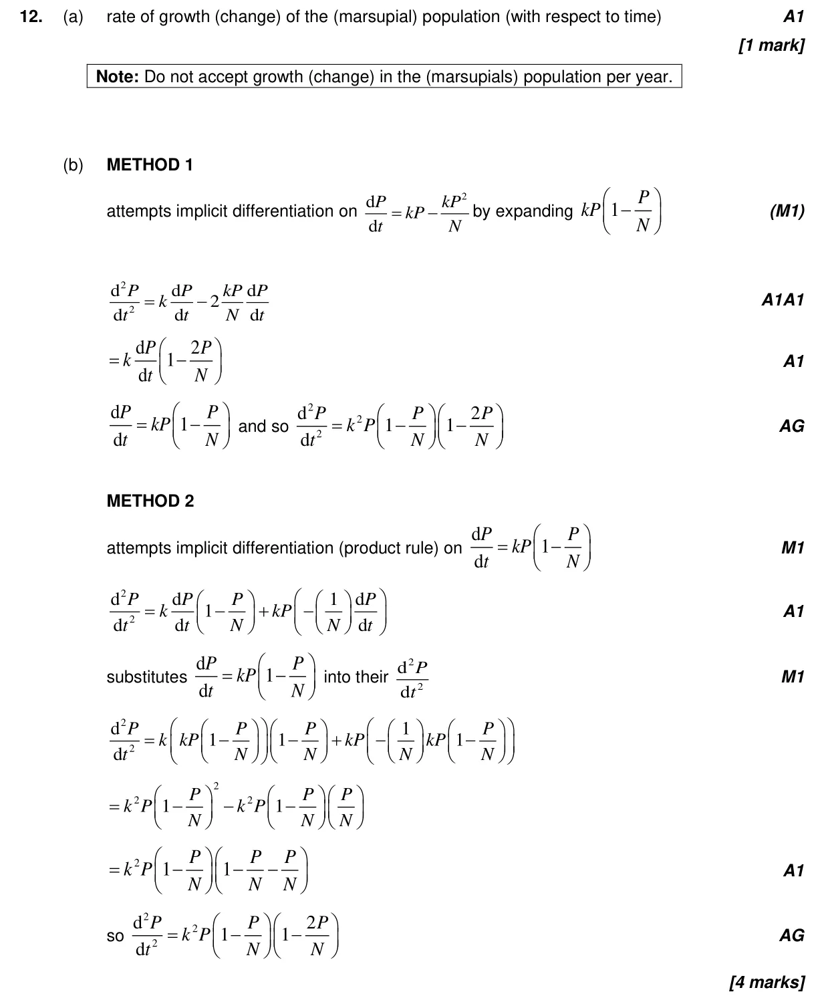
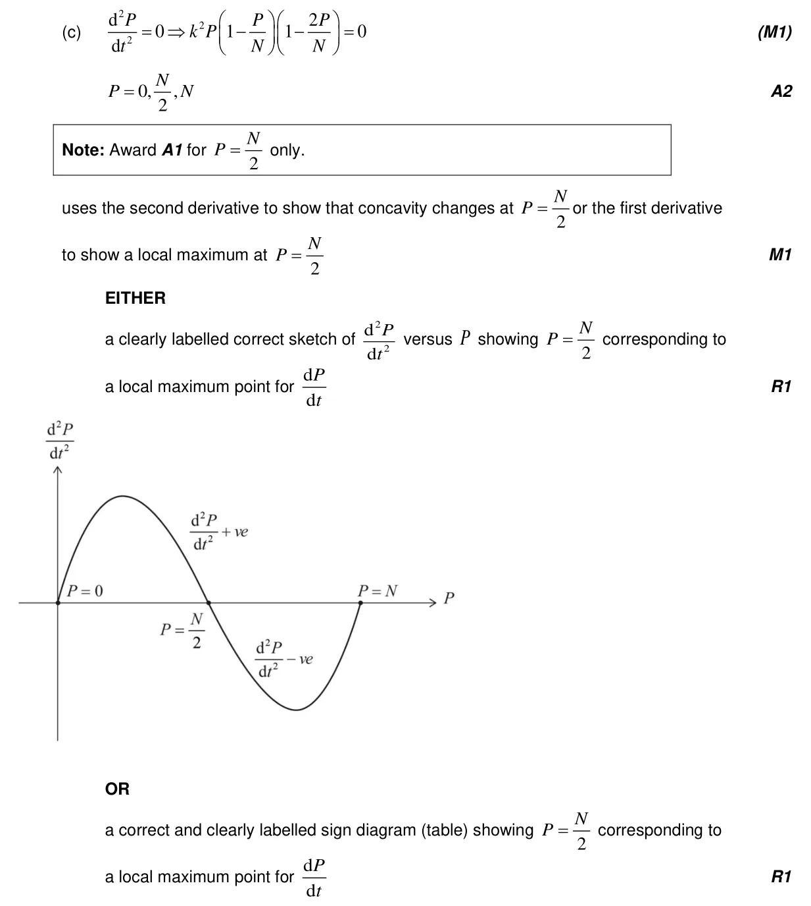
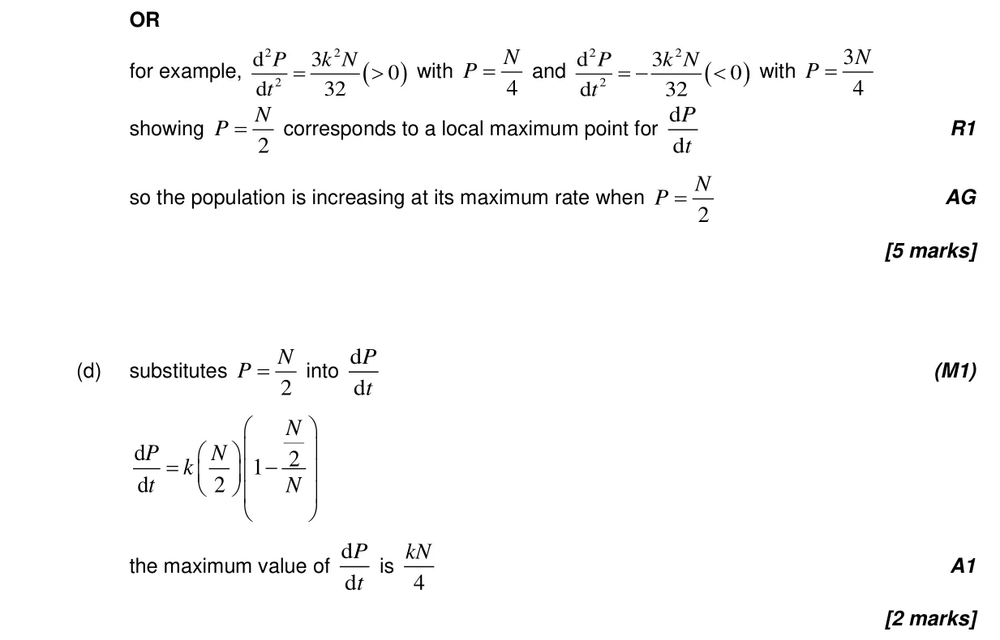
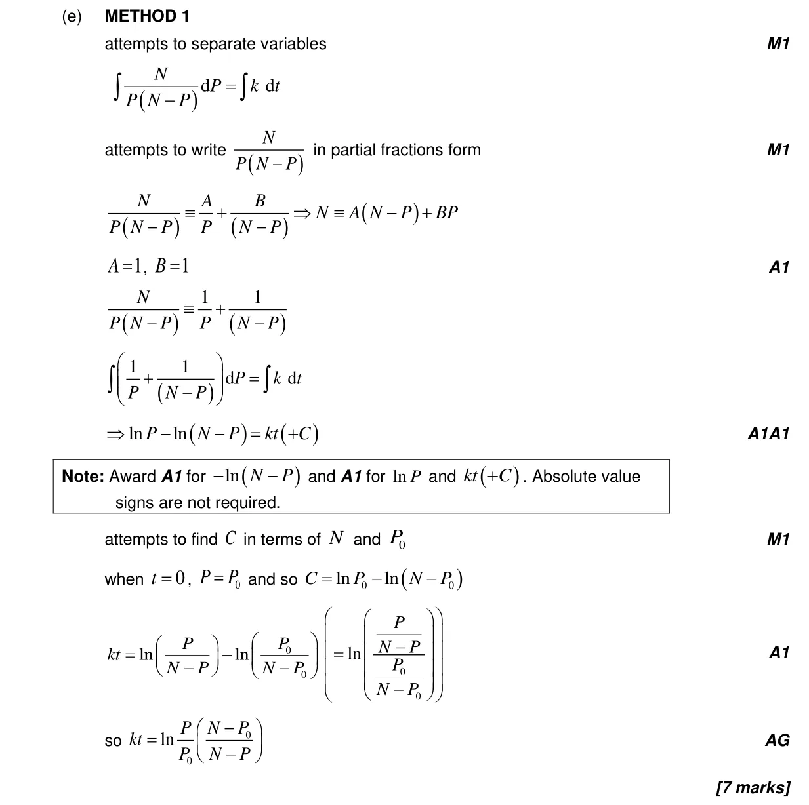
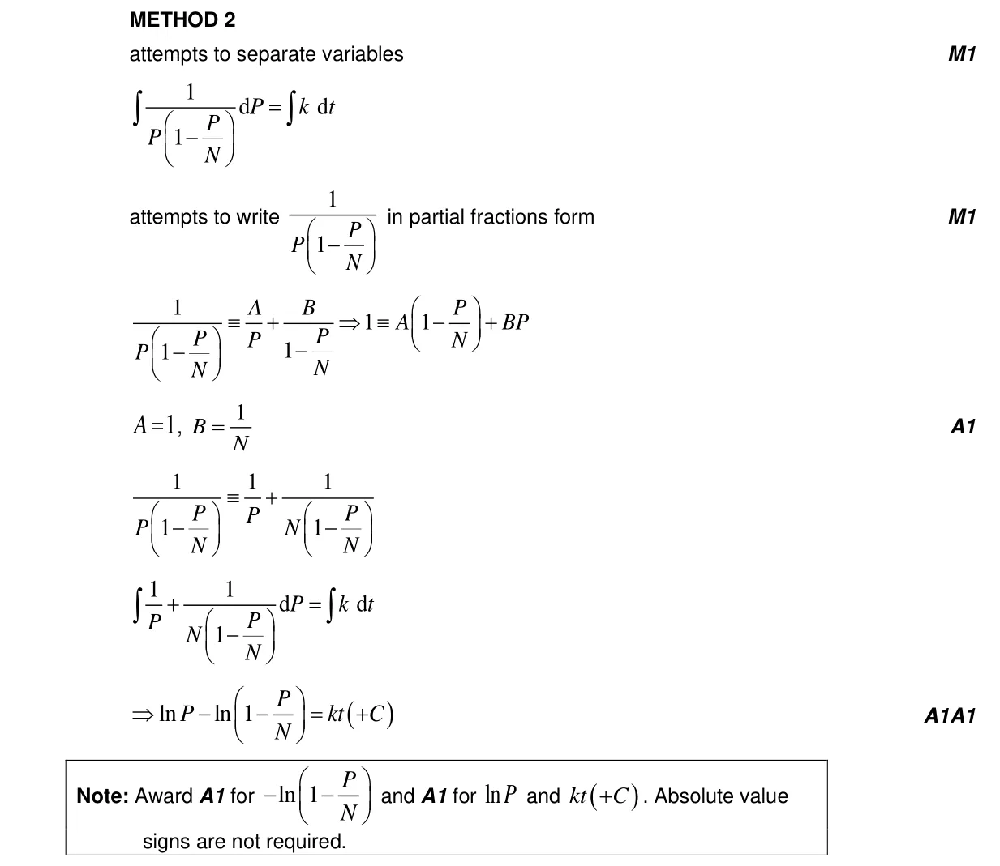
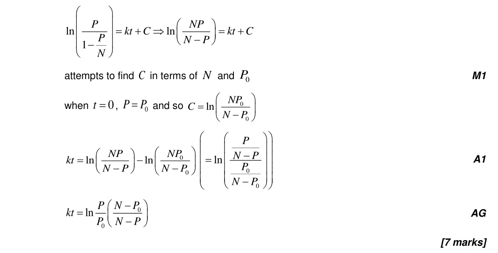
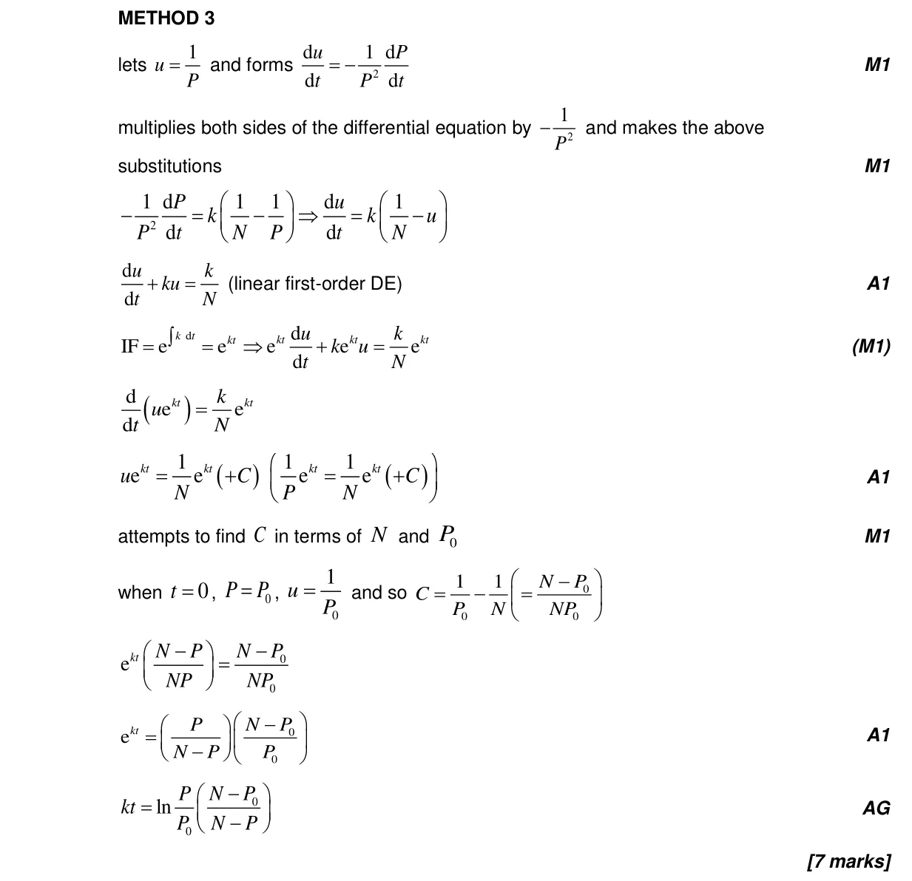
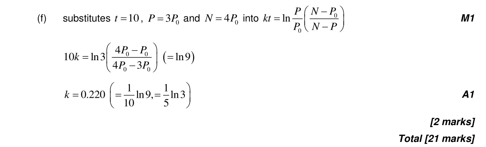

5.7 The second derivative5.8 Optimization, local extrema and points of inflexion5.18 First-order differential equations1.11 Partial fractions5.14 Implicit differentiation, related rates of change and optimisation1.7 Laws of exponents and logarithms5.1 Introduction to calculus
Question

Markscheme







